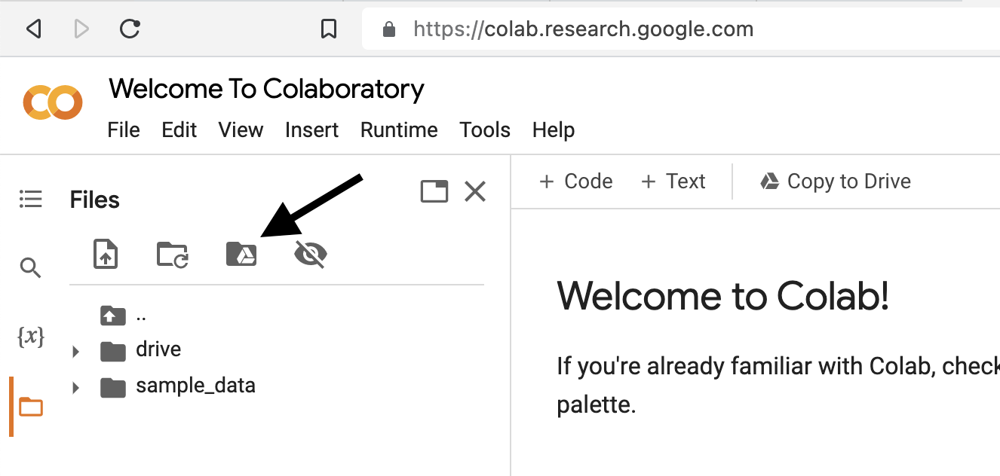

Appendice A — Ambiente di lavoro
Le procedure di inferenza statistica di questo insegnamento sono basate su calcoli che potrebbero richiedere notevoli risorse computazionali. Ci sono due approcci possibili per gestire tali attività.
Installazione Locale: Vi consiglio fortemente di optare per l’installazione delle componenti necessarie direttamente sul vostro computer. Questo significa configurare Python e tutti i pacchetti richiesti in un ambiente virtuale locale. Questo approccio offre un alto livello di controllo e indipendenza dalla connessione internet durante le tue attività. Inoltre, è particolarmente consigliato per evitare eventuali problemi tecnici durante gli esami, dove la stabilità e la fluidità dell’esecuzione sono essenziali.
Utilizzo di Google Colab: Un’altra opzione possibile è utilizzare Google Colab, una piattaforma che consente di eseguire codice Python direttamente nel browser, senza la necessità di installare software aggiuntivi sul vostro computer. Tuttavia, è importante notare che l’utilizzo di Google Colab potrebbe comportare alcune sfide durante l’esame. Per esempio, potrebbe verificarsi una situazione in cui la connessione internet diventa lenta o instabile se numerosi studenti cercano di accedere contemporaneamente a Google Colab in aula, creando così possibili interruzioni e ostacoli.
Per garantire la massima efficienza e ridurre il rischio di inconvenienti tecnici durante le attività del corso, è vivamente consigliato seguire le indicazioni fornite su questa pagina web per l’installazione locale. In questo modo, avrete il controllo completo sulle vostre risorse di programmazione e sarete pronti a gestire le attività in modo fluido, indipendentemente dalla connessione internet. Questo approccio sarà particolarmente vantaggioso durante gli esami, dove la stabilità è essenziale per il successo delle vostre prestazioni.
A.1 Guida all’Installazione Locale dei Jupyter Notebook
Per facilitare l’apprendimento e l’applicazione delle tecniche di analisi dei dati discusse in questo corso, utilizzeremo i Jupyter Notebook come strumento principale. I Jupyter Notebook sono documenti interattivi che consentono di combinare codice, testo narrativo, visualizzazioni grafiche e altri elementi multimediali, rendendoli ideali per documentare e condividere analisi di dati in modo trasparente e riproducibile.
A.1.1 Prerequisiti per l’Uso dei Jupyter Notebook
Per utilizzare i Jupyter Notebook, è necessario soddisfare alcuni prerequisiti:
Installare Python: È il linguaggio di programmazione fondamentale per il nostro corso e deve essere installato sul vostro computer.
Gestione degli Ambienti Virtuali con
conda: Utilizzeremocondaper creare e gestire ambienti virtuali, che permettono di isolare e gestire le dipendenze del progetto.Installazione dei Pacchetti Python Necessari: Dovrete installare specifici pacchetti Python, inclusi PyMC per l’analisi bayesiana, e altri pacchetti utili, all’interno dell’ambiente virtuale creato per questo corso.
Interfaccia per l’Uso dei Jupyter Notebook: Avrete bisogno di un IDE (Integrated Development Environment) che supporti i Jupyter Notebook, come Visual Studio Code, per scrivere e eseguire i vostri notebook.
A.1.2 Installazione di Anaconda
La maggior parte dei requisiti elencati può essere agevolmente soddisfatta tramite l’installazione di Anaconda, una distribuzione di Python che include conda e facilita la gestione degli ambienti virtuali e l’installazione dei pacchetti.
Se Anaconda è già stata installata, potrebbero sorgere problemi dopo l’aggiornamento del sistema operativo. In tal caso, sarà indispensabile procedere con una nuova installazione di Anaconda.
A.1.2.1 Per Utenti macOS
Se lavorate su macOS, potreste trovare più pratico utilizzare conda direttamente dal Terminale o da un’applicazione terminale moderna come Warp, piuttosto che attraverso Anaconda Navigator. In questo caso, potete optare per installare una versione di Visual Studio Code indipendente da quella fornita con Anaconda, per un maggiore controllo e flessibilità.
A.1.2.2 Per Utenti Windows
Per coloro che utilizzano Windows, l’uso di Jupyter Notebook tramite Anaconda Navigator potrebbe risultare la scelta più semplice e diretta, grazie all’integrazione e alla facilità d’uso fornite da Anaconda in ambienti Windows.
A.1.3 Creazione e Configurazione dell’Ambiente Virtuale
Indipendentemente dal sistema operativo, è fondamentale installare e configurare conda, che vi permetterà di creare {ref}appendix-virtual-env dedicati. All’interno di questi ambienti, installerete cmdstanpy (o PyMC) e gli altri pacchetti richiesti per il corso. La strada più semplice per soddisfare questi requisiti è attraverso l’installazione di Anaconda, che semplifica notevolmente il processo di configurazione iniziale e gestione degli ambienti virtuali.
Questa guida all’installazione locale mira a fornirvi tutti gli strumenti necessari per iniziare a utilizzare i Jupyter Notebook nel contesto del nostro corso, facilitando un apprendimento efficiente e la condivisione dei risultati delle vostre analisi.
A.2 Guida all’Installazione di Anaconda
Anaconda è una distribuzione popolare per la programmazione in Python. Ecco una guida passo-passo per l’installazione:
- Scaricare Anaconda:
- Visitate il sito ufficiale di Anaconda: https://www.anaconda.com/.
- Scegliete la versione adatta al vostro sistema operativo (Windows, macOS o Linux).
- Optate per il download dell’ultima versione disponibile, che include l’ultima versione di Python.
- Installare Anaconda:
- Eseguite il file di installazione scaricato.
- Seguite le istruzioni visualizzate, mantenendo le impostazioni predefinite, a meno che non abbiate esigenze specifiche.
- Aggiungere Anaconda al ‘PATH’ del Sistema:
- Durante l’installazione, vi sarà chiesto se desiderate aggiungere Anaconda al ‘PATH’ del sistema. Questo passaggio è cruciale poiché consente di utilizzare Python da qualunque parte del computer.
- Vi consiglio di selezionare questa opzione (altri metodi sono possibili, ma questo ha dimostrato di funzionare senza problemi).
- Confermare l’Installazione:
- Al termine dell’installazione, aprite PowerShell all’interno di Anaconda Navigagor (Windows) o il terminale (macOS/Linux) e digitate
python --versionper verificare se l’installazione è riuscita. Se compare la versione di Python, tutto è andato a buon fine.
- Al termine dell’installazione, aprite PowerShell all’interno di Anaconda Navigagor (Windows) o il terminale (macOS/Linux) e digitate
Anaconda include il Navigator, un’interfaccia utente grafica per gestire ambienti di sviluppo, installare librerie aggiuntive e lanciare strumenti come Jupyter Notebook, che consente (in alternativa a VS Code) di scrivere ed eseguire codice Python.
Istruzioni Specifiche per Utenti Windows:
- Scaricare Anaconda:
- Scaricate la versione “64-Bit Graphical Installer” dal sito di Anaconda.
- Installare Anaconda:
- Avviate l’installer scaricato e seguite le istruzioni visualizzate.
- Durante l’installazione, selezionate “Just Me” (solo per l’utente corrente).
- Mantenete il percorso di installazione predefinito.
- Includere Anaconda nel ‘PATH’:
- IMPORTANTE: Selezionate l’opzione per aggiungere Anaconda al PATH e impostarlo come installazione di Python di default. Di default, questa opzione è deselezionata.
- Verifica dell’Installazione:
- Cercate “Anaconda Navigator” nel menu Start. Se si apre correttamente, l’installazione è riuscita.
- Aprite “Anaconda Prompt” (o “PowerShell”) dal menu Start di Anaconda Navigator e digitate
conda --versionper confermare l’installazione diconda.
Seguite attentamente queste istruzioni per garantire un’installazione senza problemi.
Per maggiori dettagli, consultate il tutorial su come installare Anaconda su Windows: Tutorial Installazione di Anaconda su Windows. Questo tutorial offre spiegazioni dettagliate e una guida passo-passo.
Una volta installato Anaconda, potrete utilizzare Anaconda Navigator per gestire progetti Python, installare librerie necessarie e avviare strumenti come Jupyter Notebook.
È necessario comprendere la differenza tra applicazione (App) e installer.
Cos’è un’Applicazione (App)
Un’applicazione, comunemente chiamata “app”, è un software che funziona sul vostro computer o dispositivo mobile per uno scopo specifico, come navigare in internet, inviare messaggi, elaborare testi o fare calcoli. Esempi includono browser web come Google Chrome, programmi di elaborazione testi come Microsoft Word, o sistemi come Anaconda Navigator.
Cos’è un Installer
Un installer è un software che installa un’applicazione sul vostro computer. Tipicamente, quando scaricate un’applicazione da internet, scaricate in realtà l’installer. L’installer ha il compito di: - Copiare i file dell’app nella corretta cartella del computer. - Creare scorciatoie per l’app, come icone sul desktop o voci nel menu Start. - Configurare impostazioni iniziali per il corretto funzionamento dell’app.
Dopo l’Installazione
Dopo che l’installer ha completato il suo lavoro, l’applicazione sarà pronta all’uso e l’installer può essere eliminato.
In sintesi, l’applicazione è il software che userete per svolgere compiti specifici, mentre l’installer è lo strumento temporaneo per installare l’applicazione sul vostro computer. Capire questa distinzione è fondamentale nel mondo dell’informatica.
A.3 L’Ambiente Virtuale in Python
Dopo aver installato Python tramite Anaconda, un aspetto fondamentale da considerare è la creazione di un ambiente virtuale. Un ambiente virtuale rappresenta uno spazio dedicato sul vostro computer, dove è possibile installare e gestire le librerie Python necessarie per il corso, inclusi quelle per l’analisi statistica. La creazione di un ambiente virtuale è estremamente vantaggiosa poiché contribuisce all’organizzazione del lavoro e previene possibili conflitti tra diverse librerie. Le istruzioni dettagliate per la configurazione di un ambiente virtuale sono disponibili nel Appendice E`.
L’esecuzione delle fasi precedentemente delineate, ossia l’installazione di Anaconda, la configurazione di Visual Studio Code e la creazione di un ambiente virtuale, assicurerà la completa preparazione di un ambiente di sviluppo locale ottimizzato per l’utilizzo dei Jupyter Notebook nelle vostre attività legate alla data science all’interno di questo corso.
A.4 La Shell
Per la creazione e la gestione dell’ambiente di calcolo, l’uso di una shell è indispensabile. Questa può essere approfondita nella sezione {ref}appendix-shell. La shell permette di interagire con il sistema operativo attraverso l’uso di comandi in un terminale. Diverse soluzioni software sono disponibili per facilitare questa interazione.
A.4.1 Unix (MacOS, Linux)
In ambienti Unix come MacOS e Linux, ci sono diverse shell tra cui scegliere. Una scelta popolare è Bash, che è comunemente preinstallata su molti sistemi Unix. Un’altra opzione moderna è Zsh, nota per la sua facilità di personalizzazione e funzionalità avanzate. Per un’esperienza di terminale migliorata, warp è un’opzione innovativa che offre un’interfaccia utente ricca di funzionalità e supporto per i comandi intelligenti.
A.4.2 Windows
Su Windows, la shell predefinita è il Prompt dei Comandi, ma non è così potente o flessibile come le shell disponibili su Unix. PowerShell è un’opzione più avanzata disponibile su Windows, che combina la gestione della configurazione e l’automazione delle attività con un linguaggio di scripting.
A.5 Lavorare con Visual Studio Code
Per utilizzare Visual Studio Code con Python e Jupyter Notebook, è essenziale installare le relative estensioni. Per fare ciò, è sufficiente seguire alcuni semplici passaggi:
- Avvia Visual Studio Code sul tuo computer.
- Nella barra laterale sinistra, trova e clicca sull’icona con quattro quadrati, di cui uno disallineato. Questo è il menu delle estensioni.
- Nella barra di ricerca all’interno del menu delle estensioni, digita “Python” e premi Invio. Troverai diverse estensioni relative a Python.
- Trova l’estensione ufficiale di Python sviluppata da Microsoft e installala cliccando sul pulsante “Installa”.
- Successivamente, cerca “Jupyter” nella barra di ricerca delle estensioni e premi Invio.
- Trova l’estensione “Jupyter” nell’elenco dei risultati e installala cliccando sul pulsante “Installa”.
Una volta completati questi passaggi, avrai installato con successo le componenti aggiuntive necessarie per lavorare con Python e Jupyter Notebook all’interno di Visual Studio Code. Potrai quindi iniziare a scrivere, eseguire e testare il tuo codice Python e i tuoi notebook Jupyter direttamente nell’ambiente di sviluppo di Visual Studio Code.
Quando apri un file con estensione .ipynb in Visual Studio Code ricorda di selezionare l’ambiente virtuale che desiderate utilizzare. Puoi farlo tramite la “Command Palette” (⇧⌘P), utilizzando l’istruzione Python: Select Interpreter. In alternativa, puoi fare clic sull’icona Select kernel di Visual Studio Code, che si trova nell’angolo in alto a destra, sotto l’icona degli ingranaggi (⚙️).

A.6 Google Colab
Utilizzando il link è possibile accedere a Google Colab e iniziare a scrivere codice Python direttamente dal proprio browser, senza dover effettuare alcuna installazione. Basta selezionare l’opzione “Nuovo notebook” per creare un nuovo ambiente di lavoro. Per avere un’introduzione completa sulle funzionalità di Colab, si può consultare la guida disponibile al seguente link. È possibile salvare ogni notebook nella propria cartella di Google Drive per una facile gestione e condivisione dei file.
A.6.1 Uso dei Comandi Speciali in Colab
Nell’ambiente Google Colab, è possibile utilizzare il comando
!pip list -vper visualizzare un elenco dettagliato di tutte le librerie preinstallate. Questo comando fornisce informazioni utili per comprendere quali strumenti sono immediatamente disponibili per l’uso, comprese le versioni delle librerie e i percorsi di installazione.
Il prefisso ! indica un comando speciale, noto anche come comando “shell”, che consente di interagire con il sistema sottostante di Colab direttamente dalla cella del notebook, eseguendo operazioni al di fuori dell’ambiente Python standard.
A.6.2 Installazione di Librerie Supplementari
Se necessario aggiungere ulteriori librerie all’ambiente Colab, come pymc, bambi, e arviz, è possibile farlo facilmente mediante l’uso dei comandi pip. Ad esempio, per installare queste tre librerie, si possono eseguire i seguenti comandi uno dopo l’altro:
!pip install bambi
!pip install pymc
!pip install arvizQuesti comandi non solo installeranno le librerie specificate ma gestiranno anche automaticamente l’installazione delle dipendenze necessarie, tra cui numpy, pandas, matplotlib, seaborn, scipy, e statsmodels, assicurando così che tutto l’ambiente di lavoro sia pronto per l’uso.
A.6.3 Google Drive
A.6.3.1 Collegare Google Drive a Colab
Per accedere alla propria cartella di Google Drive durante l’utilizzo di Colab, è possibile seguire i seguenti passaggi:
- Dalla pagina iniziale, fare clic sull’icona a forma di cartella (Files) situata nel menu in alto a sinistra.

- Si aprirà un menu con diverse opzioni.

Selezionare la terza icona tra le quattro disposte orizzontalmente. Apparirà l’istruzione “Run this cell to mount your Google Drive”. Fare clic sull’icona del triangolo contenuta in un cerchio grigio.
A questo punto, fare clic sull’icona “drive” e successivamente su “MyDrive” per accedere alle cartelle e ai file salvati sul proprio Google Drive.
È importante tenere presente che la versione gratuita del runtime di Google Colaboratory non salva le informazioni in modo permanente, il che significa che tutto il lavoro svolto verrà eliminato una volta terminata la sessione. Pertanto, è necessario reinstallare le librerie utilizzate in precedenza ogni volta che ci si connette a Colab. Al contrario, i Jupyter Notebook possono essere salvati nella propria cartella di Google Drive.
Per salvare un Jupyter Notebook su Google Drive utilizzando Colab, è possibile seguire i seguenti passaggi:
Fare clic su
Filenella barra del menu di Colab.Selezionare
Save a copy in Drive. Di default, Colab salverà il Notebook nella cartellaColab Notebooks/.ipynb_checkpointscon un nome simile aUntitled7.ipynb.Dopo aver salvato il Notebook, è consigliabile rinominarlo facendo clic con il pulsante destro del mouse sul file nella cartella di Google Drive e selezionando
Rename. In questo modo sarà possibile assegnare un nome più significativo al Notebook.Per organizzare i file, è possibile trascinare il Notebook nella cartella desiderata all’interno di Google Drive.
Seguendo questi passaggi, sarà possibile salvare e organizzare i Jupyter Notebook nella propria cartella di Google Drive, consentendo di accedervi facilmente e mantenerli in modo permanente anche dopo la sessione di Colab.
È possibile accedere a un breve tutorial video su come utilizzare Colab e come leggere i dati da un file esterno in un Notebook di Jupyter in Colab. Il video tutorial può essere trovato seguendo il link fornito.